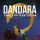
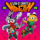
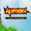
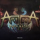
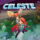
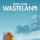

Destaques da semana
Horizon Chase Turbo
Inspirado nos clássicos jogos de corrida dos anos 80 e 90, "Horizon Chase Turbo" é um jogo de corrida arcade desenvolvido pela Aquiris Game Studio.
Toren
Ambientado em um mundo de fantasia surreal, os jogadores assumem o papel de Moonchild, uma jovem em uma jornada épica para descobrir seu destino e desvendar os mistérios de uma torre misteriosa.
Distortions
Criado pelo estúdio brasileiro Among Giants, "Distortions" é uma aventura musical imersiva que combina elementos de exploração, narrativa e música.
Aritana and the Twin Masks
Desenvolvido pelo estúdio Duaik Entretenimento, "Aritana and the Twin Masks" é um jogo de plataforma de ação que segue as aventuras do jovem guerreiro Aritana em uma jornada para salvar sua aldeia.
🫰 Apoie
Apoie o mercado nacional de games e promova o crescimento da indústria brasileira de jogos. Juntos, podemos construir um futuro vibrante para a criação de games no Brasil!
💰 Economize
Economize ao comprar jogos em nossa plataforma. Desfrute de ofertas exclusivas e suporte ao mercado nacional de games enquanto constrói sua coleção de jogos favoritos.
Jogos gratuitos
Chroma Squad
Criado pelo estúdio brasileiro Behold Studios, "Chroma Squad" é um RPG tático que coloca os jogadores no controle de uma equipe de dublês que decide criar sua própria série de TV inspirada em Power Rangers.
Klaus
"Klaus" é um jogo de plataforma e quebra-cabeça desenvolvido pelo estúdio brasileiro La Cosa Entertainment. Os jogadores assumem o controle de um homem que acorda em um mundo misterioso sem memória de quem ele é.
Tales of the Neon Sea
Desenvolvido pelo estúdio brasileiro Palm Pioneer, "Tales of the Neon Sea" é um jogo de aventura cyberpunk ambientado em uma cidade futurista.
Conheça mais jogos gratuitos
Lista de jogos
Mais vendidos
- Rock of Ages 3: Make & Break
- Katamari Damacy REROLL
-  Dandara: Trials of Fear Edition
Melhores classificações
-  Ninjin: Clash of Carrots
-  Aurion: Legacy of the Kori-Odan
-  Aritana and the Twin Masks
Lançamento
-  Celeste
-  Golf Club: Wasteland
- Unruly Heroes